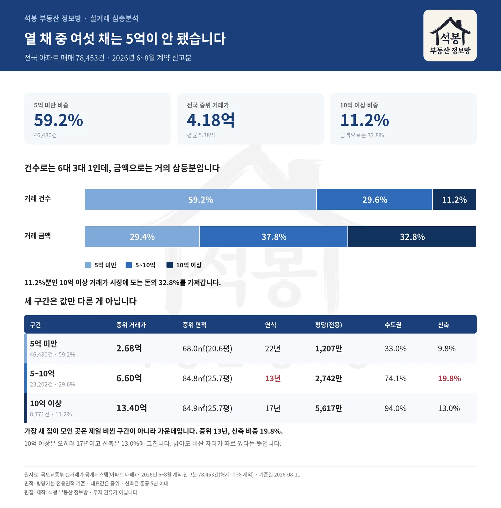
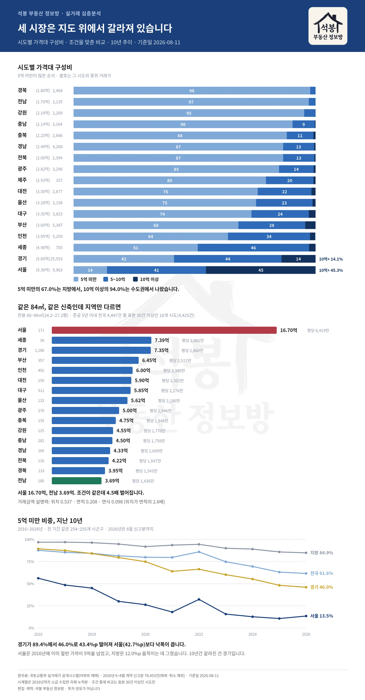

매일 실거래를 정리하다 보면 이상한 기분이 듭니다. 뉴스는 20억, 30억 이야기를 하는데 화면을 채우는 건 2억, 3억짜리 신고입니다. 그래서 세어봤습니다. 2026년 6월부터 8월까지 전국에서 신고된 아파트 매매 78,453건 가운데 5억이 안 되는 거래가 46,480건, 59.2%였습니다. 10억을 넘는 거래는 11.2%였고요. 전국 중위 거래가는 4.18억, 평균은 5.38억입니다. 그런데 금액으로 세면 이야기가 완전히 달라집니다.
건수로는 6대 3대 1, 금액으로는 3대 4대 3
가격대를 셋으로 잘랐습니다. 5억 미만, 5억에서 10억 사이, 10억 이상. 아래 표의 면적과 평당가는 모두 전용면적 기준이고, 대표값은 평균이 아니라 중위(가운데 값)입니다.
구간
건수
금액 비중
중위 거래가
중위 면적
연식
평당(전용)
5억 미만
46,480건 59.2%
29.4%
2.68억
68.0㎡(20.6평)
22년
1,207만원
5~10억
23,202건 29.6%
37.8%
6.60억
84.8㎡(25.7평)
13년
2,742만원
10억 이상
8,771건 11.2%
32.8%
13.40억
84.9㎡(25.7평)
17년
5,617만원
건수는 59.2 대 29.6 대 11.2로 아래가 압도적인데, 거래된 돈으로 세면 29.4 대 37.8 대 32.8입니다. 거의 삼등분입니다. 11.2%에 불과한 10억 이상 거래가 시장에 도는 돈의 32.8%를 차지합니다. 뉴스가 그쪽을 보는 것도 이해는 갑니다. 돈은 거기서 움직이니까요. 다만 집을 사는 사람의 수로 보면 완전히 다른 그림이 됩니다.

3층 구조
여기서부터는 회원에게 보여드립니다
카카오 로그인 3초면 전문을 읽을 수 있습니다. 무료입니다.
가입하시면 지역 시장조사 보고서(약식)를 2회 무료로 요청하실 수 있습니다.
이미 회원이면 같은 버튼으로 로그인만 됩니다
세 구간은 지도 위에서 갈라져 있습니다
이 세 구간은 같은 시장의 위아래가 아닙니다. 애초에 다른 곳에 있습니다. 5억 미만 거래의 67.0%는 지방에서 나왔고, 10억 이상 거래의 94.0%는 수도권에서 나왔습니다. 5억에서 10억 사이는 수도권이 74.1%입니다.
시도
거래
중위
5억 미만
5~10억
10억+
경북
2,468
1.80억
97.8%
2.2%
0.0%
전남
2,135
1.70억
97.2%
2.8%
0.0%
강원
2,209
2.19억
95.3%
4.6%
0.1%
충남
3,164
2.14억
90.5%
9.2%
0.3%
충북
2,666
2.23억
88.1%
11.0%
0.9%
경남
4,268
2.49억
86.6%
12.8%
0.6%
전북
2,394
2.00억
86.6%
12.9%
0.5%
광주
3,296
2.82억
84.9%
14.3%
0.8%
제주
337
2.93억
79.5%
19.6%
0.9%
대전
2,677
3.50억
76.1%
22.2%
1.7%
울산
2,158
3.28억
75.4%
23.3%
1.3%
대구
3,823
3.35억
73.5%
23.7%
2.8%
부산
5,387
3.60억
68.1%
27.6%
4.3%
인천
5,250
3.95억
63.8%
33.9%
2.2%
세종
705
4.90억
51.3%
46.0%
2.7%
경기
25,553
5.60억
41.5%
44.4%
14.1%
서울
9,963
9.30억
13.8%
40.9%
45.3%
경북과 전남은 거래의 97.8%와 97.2%가 5억 아래입니다. 10억을 넘는 거래는 석 달 동안 경북이 1건, 전남은 한 건도 없었습니다. 반대로 서울은 45.3%가 10억 이상입니다. 경기는 41.5 대 44.4 대 14.1로, 세 구간이 가장 고르게 섞인 곳입니다.
5억 아래는 누가 사고 있나
거래가 가장 많았던 곳부터 놓았습니다. 마지막 칸은 그 시군구 전체 거래에서 5억 미만이 차지하는 비중입니다.
시군구
건수
중위
중위 면적
연식
구내 비중
경남 김해시
1,064건
2.05억
80.7㎡(24.4평)
19년
96.4%
경기 남양주시
991건
3.48억
84.3㎡(25.5평)
22년
47.9%
광주 광산구
916건
2.45억
76.8㎡(23.2평)
21년
88.9%
충남 천안 서북구
857건
2.10억
64.5㎡(19.5평)
22년
84.4%
경기 의정부시
854건
3.16억
60.0㎡(18.1평)
24년
78.5%
광주 북구
813건
2.12억
73.0㎡(22.1평)
25년
87.1%
경북 구미시
811건
1.90억
77.7㎡(23.5평)
17년
97.5%
강원 원주시
789건
2.15억
76.1㎡(23.0평)
20년
98.5%
충남 아산시
754건
2.02억
61.7㎡(18.7평)
17년
85.0%
대전 서구
723건
3.00억
71.5㎡(21.6평)
29년
75.5%
1위는 김해입니다. 1,064건이 5억 아래에서 거래됐고, 김해 전체 거래의 96.4%가 여기 해당합니다. 중위 2.05억에 80.7㎡(24.4평), 19년 된 집입니다. 작은 집이 아닙니다. 20평대 중반이면 네 식구가 사는 국민평형에 가깝습니다.
눈에 띄는 건 남양주입니다. 5억 미만에서 991건으로 2위인데, 5억에서 10억 구간에서도 900건으로 상위권입니다. 한 도시 안에서 시장이 둘로 갈라져 있습니다. 5억 미만 쪽은 중위 3.48억에 22년 된 집이고, 5억 이상 쪽은 7.30억에 12년입니다. 같은 시인데 값도 연식도 다른 두 덩어리가 따로 돌아갑니다.
중간 시장이 가장 젊습니다
여기서 예상이 어긋납니다. 세 구간의 연식을 보면 5억 미만이 22년, 5억에서 10억이 13년, 10억 이상이 17년입니다. 가장 새 집이 모여 있는 곳은 제일 비싼 구간이 아니라 가운데입니다. 준공 5년 이내 신축 비중도 중간 구간이 19.8%로 가장 높고, 10억 이상은 13.0%에 그칩니다.
시군구
건수
중위
중위 면적
연식
구내 비중
경기 화성 동탄권
1,480건
7.10억
84.5㎡(25.6평)
9년
71.4%
경기 남양주시
900건
7.30억
85.0㎡(25.7평)
12년
43.5%
경기 용인 기흥구
824건
6.58억
84.9㎡(25.7평)
17년
60.8%
서울 노원구
786건
6.80억
59.9㎡(18.1평)
36년
63.9%
경기 용인 수지구
634건
8.40억
85.0㎡(25.7평)
24년
56.7%
인천 연수구
624건
7.15억
84.9㎡(25.7평)
9년
58.7%
경기 수원 권선구
610건
6.26억
84.9㎡(25.7평)
11년
49.6%
경기 수원 영통구
598건
6.75억
84.4㎡(25.5평)
24년
54.0%
경기 고양 덕양구
576건
7.00억
84.9㎡(25.7평)
11년
57.5%
경기 안양 동안구
482건
7.60억
59.9㎡(18.1평)
29년
55.7%
1위 경기 화성 동탄권은 1,480건에 중위 7.10억, 84.5㎡(25.6평), 9년입니다. 상위권 열 곳의 중위 면적이 대부분 84㎡대로 모입니다. 다만 이 구간이 전부 새 아파트인 건 아닙니다. 신축은 19.8%고, 표에도 연식 10년 안팎의 새 단지와 36년 된 구축이 함께 들어 있습니다. 정확히는 세 구간 가운데 새 집 비중이 가장 높은 층이고, 그 규모가 석 달에 23,202건입니다.
더 놀라운 건 신축 전체를 놓고 봤을 때입니다. 준공 5년 이내 거래 10,273건 가운데 44.2%가 5억 아래에서 팔렸습니다. 중위 면적은 72.9㎡(22.0평)로 작지도 않습니다. 아산에서는 새 아파트 139건이 중위 3.35억에 거래됐고 면적은 71.3㎡(21.6평)였습니다. "싼 집은 낡은 집"이라는 통념이 데이터에서는 잘 맞지 않습니다.

지역 분포
서울에서 5억은 집이 아니라 방입니다
서울에도 5억 미만 거래가 1,374건 있었습니다. 다만 성격이 전혀 다릅니다. 중위 면적이 42.9㎡(13.0평)입니다. 45.2%가 전용 40㎡가 안 되고, 86.9%가 60㎡ 미만입니다. 지방에서 5억 미만이 73.7㎡(22.3평)인 것과 견주면 절반 남짓입니다.
같은 돈으로 지방에서는 방 셋짜리를 사고 서울에서는 원룸이나 투룸을 삽니다. 5억이라는 숫자는 같지만 손에 쥐는 것이 다릅니다. 가격대만 놓고 지역을 비교하면 안 되는 이유입니다.
값을 가르는 것은 면적도 연식도 아닙니다
그럼 무엇이 이 세 층을 만드는지 통계로 확인해봤습니다. 거래금액에 로그를 씌우고, 시군구·면적대·연식대가 각각 그 흩어짐을 얼마나 설명하는지 계산했습니다.
시군구(위치) 0.537 · 전용면적 0.208 · 건축 연식 0.098 1에 가까울수록 그 요인만으로 가격을 잘 설명한다는 뜻입니다.
위치가 면적의 2.6배, 연식의 5.5배입니다. 조건을 아예 똑같이 맞춰보면 더 분명해집니다. 전용 80~90㎡(24.2~27.2평)에 준공 5년 이내인 거래만 남기면 전국 4,447건입니다. 이 가운데 표본이 30건 이상인 16개 시도(4,425건)의 중위값이 이렇습니다.
시도
거래
중위 거래가
평당(전용)
서울
171건
16.70억
6,419만원
세종
36건
7.39억
2,881만원
경기
1,188건
7.35억
2,860만원
부산
357건
6.45억
2,511만원
인천
455건
6.00억
2,340만원
대전
159건
5.90억
2,302만원
대구
511건
5.85억
2,276만원
울산
132건
5.62억
2,186만원
광주
276건
5.00억
1,946만원
충북
135건
4.75억
1,848만원
강원
125건
4.55억
1,770만원
충남
282건
4.50억
1,758만원
경남
169건
4.33억
1,690만원
전북
116건
4.22억
1,647만원
경북
133건
3.95억
1,543만원
전남
180건
3.69억
1,436만원
면적도 같고 연식도 같은데 서울 16.70억, 전남 3.69억으로 4.5배 벌어집니다. 집의 물리적 조건은 값의 일부만 설명합니다. 나머지는 그 집이 어디 서 있느냐가 결정합니다.
지난 10년, 진짜 바뀐 곳은 경기였습니다
그럼 이 구조가 원래 이랬는지, 아니면 최근에 만들어진 건지 궁금해집니다. 2016년부터 2026년까지 실거래를 이어붙여 5억 미만 비중이 어떻게 움직였는지 봤습니다. 같은 254~255개 시군구를 계속 따라간 값입니다.
구분
2016년
2026년
변화
중위 거래가
전국
87.7%
61.6%
-26.1%p
2.45억 → 3.95억
서울
56.2%
13.5%
-42.7%p
4.63억 → 9.20억
경기
89.4%
46.0%
-43.4%p
2.84억 → 5.28억
지방
96.9%
84.9%
-12.0%p
1.75억 → 2.50억
서울이 56.2%에서 13.5%로 떨어진 건 예상대로입니다. 그런데 경기가 89.4%에서 46.0%로, 낙폭이 43.4%p로 서울(42.7%p)보다 큽니다. 서울은 2016년에도 이미 절반 가까이가 5억을 넘었으니 더 떨어질 자리가 적었고, 경기는 열에 아홉이던 5억 벨트가 10년 만에 절반으로 줄었습니다. 지방은 96.9%에서 84.9%로 12.0%p 움직이는 데 그쳤습니다.
노원이 그 변화를 압축해 보여줍니다. 서울인데 거래의 63.9%가 5억에서 10억 사이에 있고, 중위 6.80억에 59.9㎡(18.1평), 36년 된 집입니다. 같은 서울인데 성동구는 94.3%가 10억을 넘고 중위가 17.80억입니다. 서울 하나로 묶어 말할 수 없는 이유입니다. 경기에서도 성남 분당구가 92.9%로 서울 상위권과 같은 층에 있습니다.
거래가 50건 이상인 시군구 172곳을 구성비로 나눠보면 5억 미만이 70%를 넘는 곳이 101곳, 5억에서 10억이 40% 이상인 곳이 41곳, 10억 이상이 절반을 넘는 곳이 18곳입니다. 마지막 18곳이 뉴스에 나오는 그 동네들이고, 전체 거래에서 차지하는 몫은 7.7%입니다.
정리하면
한국 아파트 시장은 하나가 아니라 세 개로 나뉘어 있고, 그 셋은 가격만 다른 게 아니라 지역도 면적도 연식도 다릅니다. 지방의 5억 벨트, 수도권 외곽의 신축 중간 시장, 서울과 분당의 10억권. 이 셋은 서로 다른 사람들이 서로 다른 이유로 참여하는 시장입니다.
내 예산이 어느 층에 속하는지 알면 봐야 할 지역이 정해집니다. 5억이면 지방 광역시나 경기 외곽에서 20평대 중반을 볼 수 있고, 신축까지 노린다면 아산이나 평택처럼 공급이 이어지는 곳이 후보가 됩니다. 7억이면 동탄이나 연수구처럼 10년 안쪽 단지가 많은 수도권 외곽에서 84㎡급이 들어옵니다. 뉴스에 나오는 숫자를 기준 삼으면 선택지가 없어 보이지만, 실제로 거래되는 집의 열에 아홉은 10억 아래에 있습니다.
원자료: 국토교통부 실거래가 공개시스템(아파트 매매) · 2026년 6~8월 계약 신고분 78,453건(해제·취소 제외) · 기준일 2026-08-11 시계열은 2016년까지 소급 수집한 자체 누적본(전 기간 254~255개 시군구) · 면적과 평당가는 전용면적 기준, 대표값은 중위(가운데 값) 편집·제작: 석봉 부동산 정보방 · 투자 권유가 아닙니다.